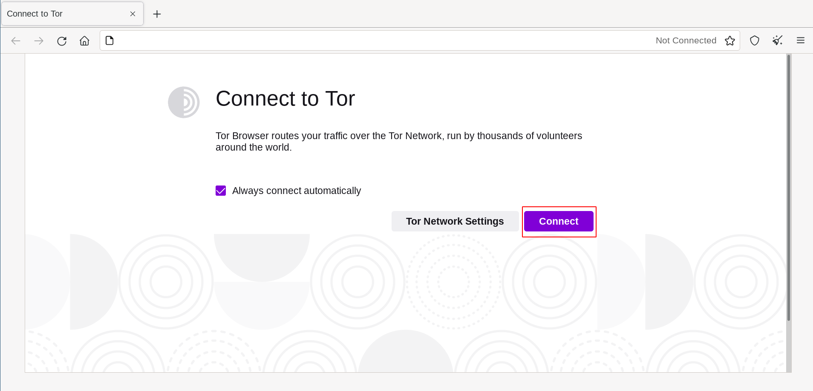

理论上来说，当 Tor 浏览器启动后您应该可以直接开始浏览网页，若是首次启动的话只需要再点击“连接”按钮即可开始上网。

快速修复
如果 Tor 浏览器没有连接，那么可能比较简单。
Try each of the following:
- 您的计算机系统的时钟必须正确设置，否则洋葱路由无法连接。
- Make sure another Tor Browser or instance of 'Tor' is not already running on your system.
If you’re not sure if Tor Browser is running, restart your computer.
- Make sure that any antivirus program you have installed is not preventing Tor from running.
You may need to consult the documentation for your antivirus software if you do not know how to do this.
- 临时禁用您的防火墙。
- If Tor Browser was working before and is not working now your system may have been hibernating.
A reboot of your system will solve the issue.
- 删除 Tor 浏览器并重新安装。
If updating, do not just overwrite your previous Tor Browser files; ensure they are fully deleted beforehand.
查看 TOR 日志
In most cases, taking a look at the Tor logs can be helpful in diagnosing the issue.
如果您的连接出现问题，一则错误信息会弹出，您可以选择“将 Tor 日志复制到剪切板上”选项。
然后粘贴 Tor 日志到文本文件或者其他文档格式中。
如果您没看到这个选项，并且正运行着 Tor 浏览器，那么您可以找到“菜单”（在浏览器右上角，URL条的右侧），然后点击“偏好”，最后在边栏点击“Tor"。
在此页面的底部，“查看 Tor 日志”字样旁边，点击“查看日志”按钮。
Alternatively, on GNU/Linux, to view the logs right in the terminal, navigate to the Tor Browser directory and launch the Tor Browser from the command line by running:
./start-tor-browser.desktop --verbose
Or to save the logs to a file (default: tor-browser.log):
./start-tor-browser.desktop --log [file]
More information on this can be found on the Support Portal.
您的连接是否受审查？
If you still can’t connect, your Internet Service Provider might be censoring connections to the Tor network.
Read the Circumvention section for possible solutions.
已知问题
Tor Browser is under constant development, and some issues are known about but not yet fixed.
Please check the Known Issues page to see if the problem you are experiencing is already listed there.